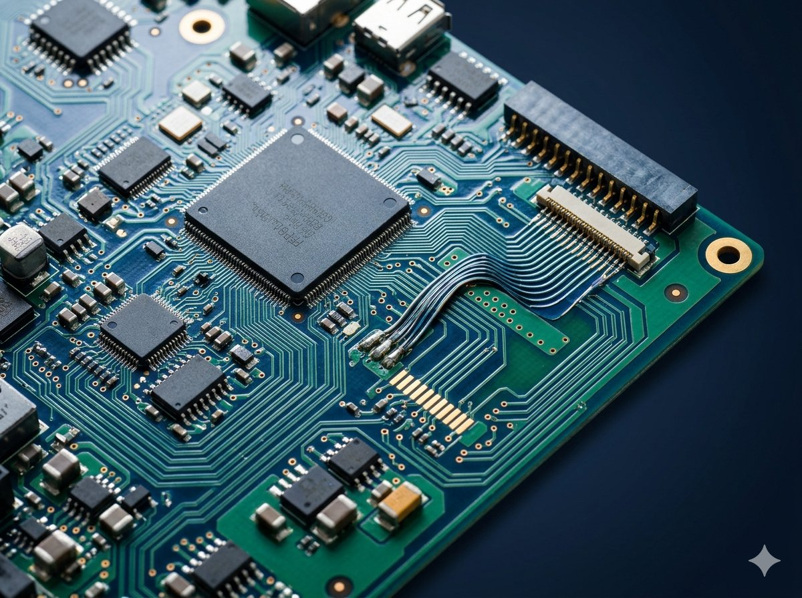
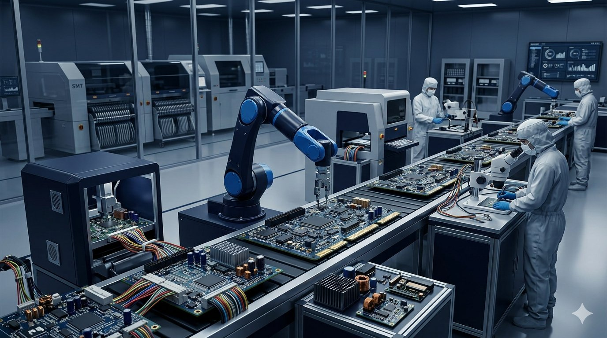
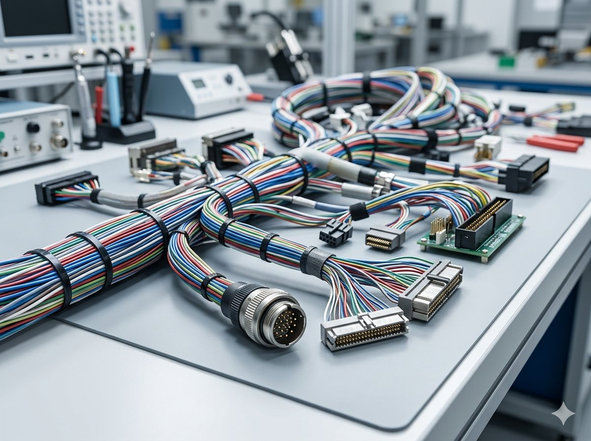

基板だけでなく、周辺部材・調達実務まで一社でまとめて対応します。
設計から基板製作まで対応
SMT・挿入実装に対応
ハーネスの組立・加工
半導体・電子部品の販売
多様な基板タイプに対応。特殊用途・高難易度の案件もご相談ください。

標準的な構成から多層積層まで幅広く対応。
高精度な多層基板・ファインパターン基板に対応。
屈曲性が必要な用途向けFPCの製作・実装。
放熱性が必要な用途向けの金属コア基板。
電源系・パワー系回路向け厚銅箔基板。
LED照明用途に特化した基板の設計・製作。
社内に実装設備・検査設備を保有し、製作から品質確認まで責任を持って対応します。

各種電線ハーネスの組立・加工・販売に対応。基板周辺の配線部材もまとめてご依頼いただけます。半導体、集積回路、各種電子部品の調達・販売にも対応しています。

プリント基板、電子部品、半導体、ハーネス、周辺部材など、製造業の調達実務に関わる幅広い領域で納入・取扱実績があります。
※掲載内容は過去の取扱・関連実績を含みます。個別案件の対応可否についてはお問い合わせください。